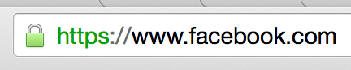

Nous avons réalisé un petit site HTML / CSS, il est temps de le mettre en ligne
Pour que notre site soit accessible dans le monde entier, il va falloir le stoquer chez un hébergeur
Ça revient à mettre les fichiers sur un ordinateur relié à Internet
Lorsqu'un visiteur va taper l'URL du site, il va pointer sur cet ordinateur et ce dernier va renvoyer les fichiers
Il en existe plusieurs types :
Il est aussi possible de sous-traiter l'hébergement par une agence qui s'occupera de trouver la meilleure offre et de la gérer pour vous
Offre personnalisée en générale coûteuse
Pour un site simple, un hébergement mutualisé fait largement l'affaire
Ce choix n'est pas définitif, il sera toujours possible de migrer vers une autre offre en temps voulu
Souscrire à un hébergement mutualisé ne prend que quelques minutes (max quelques heures)
Les différents hébergeurs vont vous proposer une multitude d'offres
Vous allez devoir choisir selon votre besoin
Mais aussi penser au long terme tout de suite
Windows ou Linux
Il ne s'agit pas de votre système, mais de celui de votre hébergement
Prenez Linux
Correspond à l'adresse de votre site (ex : bruno-simon.com)
Ne pas confondre avec le sous-domaine
(ex : sous-domaine.bruno-simon.com)
Les sous-domaines sont en général gratuits et illimités
Vous avez peut-être intérêt à avoir plusieurs nom de domaines tout de suite
Fonctionne comme le disque dur de votre ordinateur
Si votre site n'a rien de spécial, n'importe quel espace suffira
Si votre site contient des vidéos HD, une grande quantité d'images ou laisse la possibilité aux utilisateurs d'envoyer des fichiers, il faudra peut-être prévoir plus large
Capacité à prendre en charge les visites
⚠️ Arnaque
Si votre site utilise du PHP, il faut que le serveur le supporte
Les offres comprennnent en général PHP, parfois Python et Ruby
Il existe plusieurs versions de ces languages. Vérifiez que celle du site correspond à celle de l'hébergeur
Content Delivery Network
Duplication des contenus statiques du site (images, vidéos, ...) sur différents serveurs à travers le monde
Permet d'avoir un site rapide quelque soit la position géographique
Utile pour les sites internationaux
Si votre site utilise une base de données (SQL)
Permet d'encrypter les requêtes
Lorsque vous naviguez sur un site, tout ce que vous envoyez et recevez peut être intercepté facilement
L'encryptage SSL permet d'éviter ça
L'accès à votre site ne se fait plus par http://, mais par https://
C'est le cas de Facebook, Google, Twitter, Youtube

Les hébergeurs vont essayer de vous vendre plein de services
Il existe de nombreux fournisseurs
La suite du cours prendra comme exemple un hébergement mutualisé 1&1, mais elle est valable pour les autres hébergements
Nous partons de l'idée que nous avons déjà souscris à l'offre
https://pmd-2022.bruno-simon.com/blog/
Certains hébergeur vous feront créer le nom de domaine directement durant l'inscription
Le nom de domaine peut être pris à part de l'hébergement, mais ça complique souvent la tâche.
Un nom de domaine peut mettre plusieurs minutes ou plusieurs jours pour se mettre en place
Ce délais change selon le pays
On parle de propagation DNS, c'est le temps que mettent les serveurs à travers le monde pour apprendre l'URL de votre site
Depuis peu, il en existe de nombreuses nouvelles extensions
.buzz .bar .clothing .guide .club .sexy .xxx .pizza .beer .vodka .ninja
En général illimités (ou presque) et gratuits
Permet d'associer un site à un domaine
(ex : blog.monsite.com ou forum.monsite.com)
www est un sous-domaine
Dans le cadre du cours, nous allons utiliser le sous-domaine pmd-2022.bruno-simon.com plutôt qu'un vrai domaine
Nous avons notre domaine, il faut maintenant transférer/uploader notre site sur l'espace de stockage de notre hébergement
On parle de FTP (File Transfer Protocol)
Nous allons avoir besoin d'un logiciel (ou client)
FileZilla est le plus connu
Il est gratuit et compatible avec Windows et Mac
Nous allons avoir besoin des données de connexion
C'est l'hébergeur qui va vous les fournir
À cet endroit, il est parfois possible d'assigner un accès FTP à un repertoire en particulier
Utile si vous êtes plusieurs sur le même hébergement
Vous pouvez maintenant glisser les fichiers sur la partie de droite et attendre que les fichiers soient uploadés
Votre site est en ligne : http://pmd-2022.bruno-simon.com
La legislation s'applique au lieu d'hébergement
Vous ne pouvez héberger n'importe quoi sur votre site